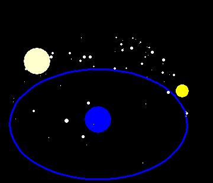
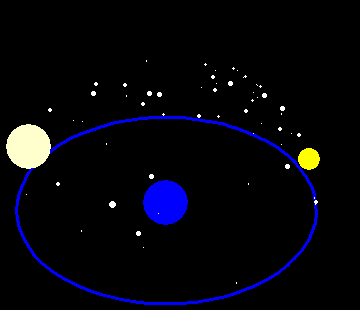

Chapter 1The testimony of the ages confirms that the motions of the planets are orbicular. It is an immediate presumption of reason, reflected in experience, that their gyrations are perfect circles. For among figures it is circles, and among bodies the heavens, that are considered the most perfect. However, when experience is seen to teach something different to those who pay careful attention, namely, that the planets deviate from a simple circular path, it gives rise to a powerful sense of wonder, which at length drives men to look into causes. (p.115) The Starry VaultOur earth, which we are standing on, is the huge blue sphere, and the blue circle around it is the horizon, the limits of our sight. Imagine you are on your back, looking up. This is a live view of the night sky from an undisclosed location. Watch it carefully! Actually, this picture doesn't move at all, but that's what stargazing is like! You don't see a particular star move any more than you can see the hour-hand on a watch moving, yet the change happens. Let's say you look up again in an hour. Here's what you'd see: The stars all seem to move in the sky. Doing this for an entire night until the sun comes up and ruins your view, you observe this (noting one particularly bright, redish star that stands out to you): Do certain stars move faster than others? It seems that each star moves in its own particular circle, and there seems to be a spot where the star doesn't move at all. This spot that doesn't seem to move during the night, but around which the other stars move, acts like the end of a large pole, so we can call the star located there the pole-star. Now we have some directions! It also seems that the sun rises and sets not in the pole direction, or opposite it, but in between its direction and the opposite. We can name these directions: the pole-star direction is North (unless you're in Australia and see a certain cross that seems to rotate while maintaining the same position and call this pole South), its opposite is South, and the directions of the rising and setting of the sun East and West, respectively. First and Second MotionsAround a dozen or so days later, you see the moon every night as well. Let's take a few nights and spend them watching the sky. Although you may find it easier to look at two at once to compare them, how would you do so without a computer animation? The motion would only be in your mind, or, expressed by your mind in a drawing. First night  Next night  Last night What did you discover? How high was the moon in the sky at sun-down on the three days? Among which stars is it found? Does everything in the sky move at the same speed? Which moves faster: the stars or the moon? You have now discovered the difference between the First Motion and the Second Motion: the first motion presenting itself to the mind of all the stars, including the moon, and the second motion, seen only through thought and comparison, of the particular heavenly bodies moving against the stars: The first motion is that of the whole heaven and of all its stars from east past the meridian to the west... The second motions are those of the individual planets from the west to the east. (p.115) Taking more care in the observations, it is noticed that the sun, too, moves more slowly than the stars. The stars are more advanced at each sunset. Here are a week's worth of sunsets, as they appear to the animating mind (not the eyes): A week of sunsets This first adumbration of astronomy explains no causes, but consists solely of the experience of the eyes, extremely slowly acquired. (p.117) At this same time of year, while the red star rises near sunset, and is particularly bright (do other stars change their brightess during the year?), we can observe it at its peak, around the middle of the night. By using our mind to remove the daily motion of the heavens, we can focus our powers of reason upon the single star's second motion: this brings out more problems! Let's combine a couple of weeks of observations, creating the following animation in our minds: This bright star, which, like the sun, usually was slower than the stars, being left behind them every night in the westward motion, reaches a time of staying even with them, and then, contrary to its usual motion, moves faster to the west than the fixed stars, before again stopping and resuming its eastward motion... This "...gives rise to a powerful sense of wonder, which at length drives men to look into causes." RetrogradeA paradox:It was apparent that the three superior planets, Saturn, Jupiter, and Mars, attune their motions to their proximity to the sun. For when the sun approaches them they move forward and are swifter than usual, and when the sun comes to the sign opposite the planets they retrace with crablike steps the road they have just covered. (p.118)(Click here for a visualization of how Ptolemy and Brahe conceived this occuring.) That this retrogression, or backwards-motion, occurs always when the sun is opposite these planets ("wanderers" in Greek), is peculiar, for they do not make their path through the stars in the same time as the sun. Our bright red star Mars, for example, moves through the stars and regains its original position in a little less than two years, although the exact amount of time changes from cycle to cycle, owing to the influence of its proximity to the sun on its path. These two, different, but interacting tendencies among the second motion of a particular planet, are known as the first inequality (its motion through the stars) and the second inequality (the relationship of its proximity to the sun on its motion). In order to study the first inequality by itself, we'll have to remove the influence of the second inequality. But in order to separate the second inequality from this first one, they could proceed no otherwise than by considering the planets on those nights at whose beginning they rise while the sun is setting, which thence were called akronychioi, or night rising... [A]t the very moments of conjuunction with and opposition to the sun they are traversing their own true and proper positions. But since they cannot be seen when in conjunction with the sun, only the opposition to the sun remains as suitable for this purpose. (p.120) Retrograde occuring at opposition. The light blue spot is the location opposite the sun -- the Earth's zodiacal position. (Note the extreme latitude at opposition. The blue line at the bottom of the animation is the ecliptic -- the path that the sun traces against the stars, and the average latitude of Mars.) Keep reading for mean and apparent oppositions! You can click here for a draft, 3D version of the spherical animation. |